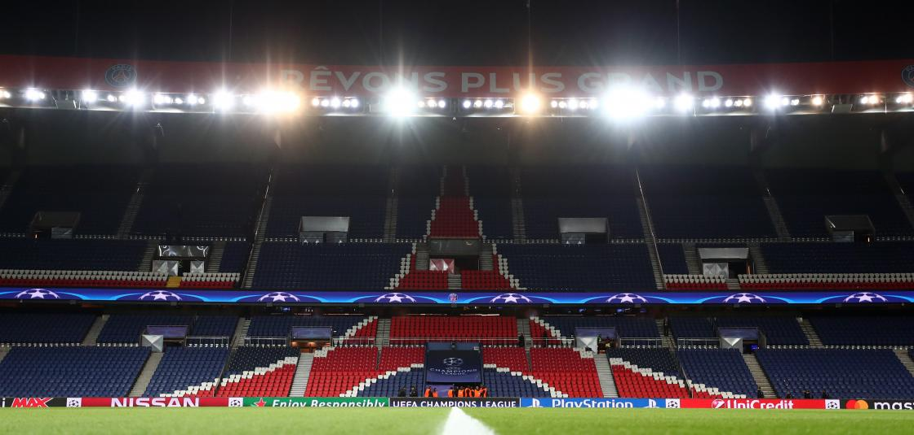

Le logo « emblématique » du Paris SG, parfois qualifié de logo « tour Eiffel », est composé d'une représentation de la Tour Eiffel en rouge au-dessus d'un berceau blanc, représentant le berceau royal de l'écu de Saint-Germain-en-Laye où naquit Louis XIV, sur fond bleu. Il fait son apparition dès la saison 1972-1973, avant l'arrivée d'Hechter. Son adaptation, avec l'ajout du Parc des Princes, apparaît dès le milieu des années 1970 dans le merchandising du club mais n'est adopté comme emblème officiel qu'en 1982.
En 2013, deux ans après le rachat du club par le Qatar Sports Investments, les nouveaux dirigeants modifient le logo en gardant la trame du logo « tour Eiffel ». Le nom Paris apparait avec une typographie plus grande que le nom Saint-Germain afin de donner une plus grande importance à la capitale dans un souci de merchandising international. La fleur de lys, représentant Saint-Germain-en-Laye est toujours présente. En revanche, le landau, symbole peu connu, et la date de création du club disparaissent.

Le Parc des Princes est un stade situé au sud-ouest de la ville de Paris, dans le 16e arrondissement depuis 1897 et sur le périphérique parisien dans sa configuration actuelle depuis 1971 près de la commune de Boulogne-Billancourt. Plus important stade français de 1972 à 1998, actuellement, c'est le cinquième plus grand stade français mais toujours l'un des plus anciens et des plus connus de la région parisienne. Propriété de la Ville de Paris, le stade est en concession à la SESE (Société d'Exploitation Sports et Evénements), une société fondée en 1988, devenue filiale de Canal+ en août 1992, cédée une deuxième fois en juin 2006 lors de la vente du PSG à un fonds d'investissements américain (Colony Capital), à un fonds d'investissements français (Butler Capital Partners) et à une banque américaine (Morgan Stanley). Le bail de concession du stade est renouvelé en 2014 par la Ville de Paris pour une durée de 30 ans à la SESE désormais sous le contrôle de Qatar Sport Investments (QSI) depuis fin mai 2013.